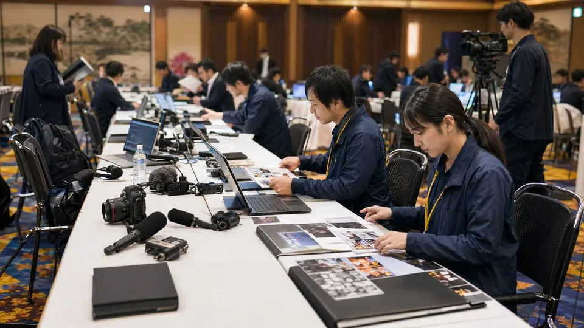
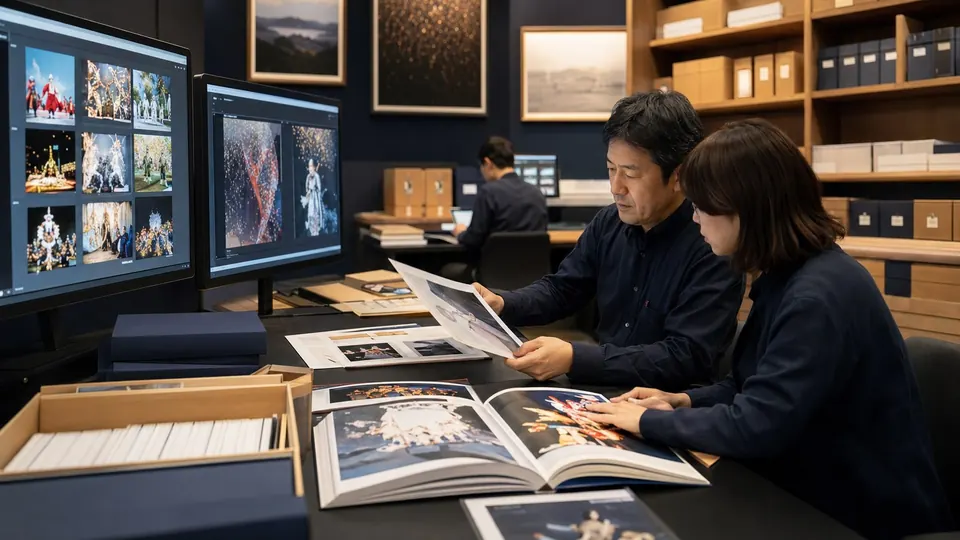
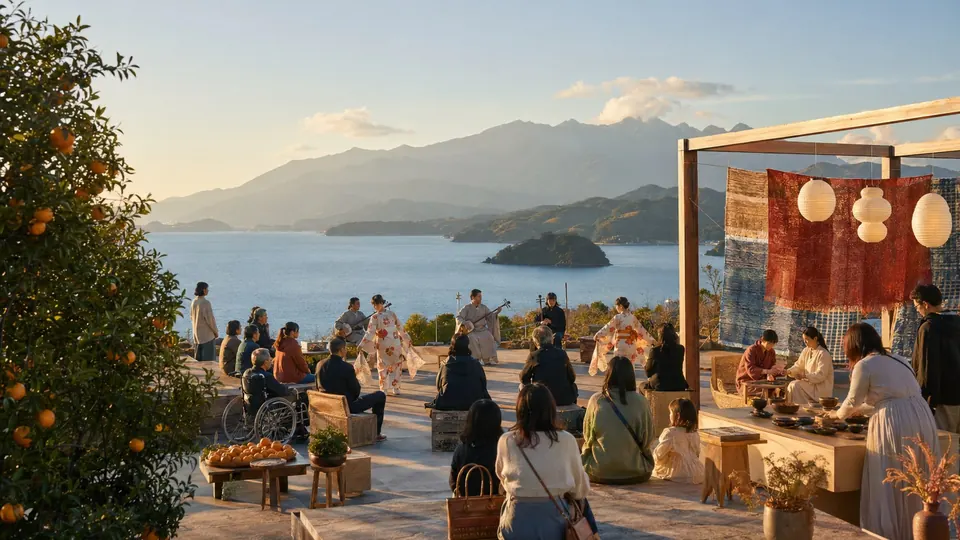

更新日、カテゴリ、問い合わせ先を明示する
正式決定後、この方針に沿って具体的な情報を掲載します。
必要な情報をすぐに
会期前・会期中の重要情報、変更・中止、緊急連絡を分かりやすく掲載します。

掲載内容の仮イメージ
会期前・会期中は、イベント変更、中止、交通規制、災害・荒天時の案内をこの枠で掲出します。
掲載イメージ
正式決定後、この方針に沿って具体的な情報を掲載します。
正式決定後、この方針に沿って具体的な情報を掲載します。
正式決定後、この方針に沿って具体的な情報を掲載します。
完成形の具体例
正式決定前の情報は未確定として扱いながら、利用者が何を確認できるページになるのかを具体例で示します。
「重要なお知らせ」では、掲載項目を明確にするための情報を整理します。
正式決定後は、この方針に沿って本文・資料リンク・問い合わせ先を更新します。
ページの役割
会期前・会期中の重要情報、変更・中止、緊急連絡を分かりやすく掲載します。
写真表現


同じ分類のページ
問い合わせ導線
担当部署、受付時間、メールアドレス等は正式決定後に掲載します。現段階では仮導線として総合問い合わせへ誘導します。
未確定の掲載案・表示例を含みます。正式名称・会期は大会概要でご確認ください。
大会概要を確認